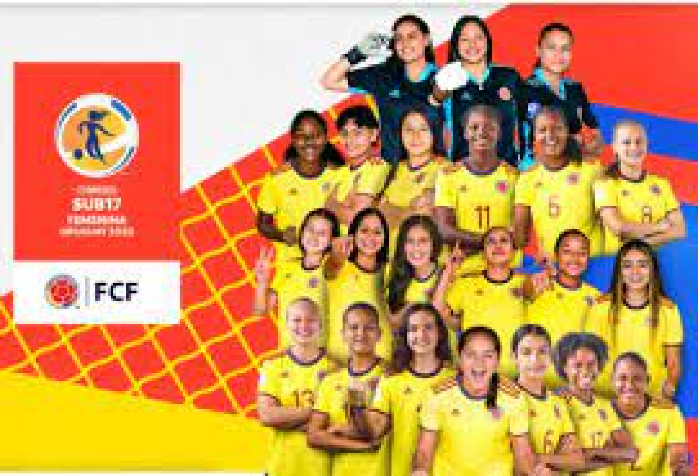

FUTSAL
La Selección Colombia femenina de microfútbol se coronó campeona de la cuarta edición del Mundial de la categoría.
Las dirigidas por Willinton Rolando Ortiz Acuña terminaron el torneo invictas y sin recibir un solo gol. En las rondas pasadas, ya le habían ganado 8-0 a Canadá, a Uruguay 7-0, a Australia 13-0 y a Venezuela 6-0.
Shandira Wright, Laura Becerra, Johana Jiménez, Laura Tamayo y Paola Estrada marcaron los 12 goles con los que Colombia se impuso ante las canadienses
En la fase de grupos del Mundial de Mosquera, ambos conjuntos se habían enfrentado. En esa ocasión, el cuadro de Colombia se impuso por 9-0. Wright anotó cinco goles esa noche.
JUGADORAS
FUTBOL
La Selección Colombia femenina de microfútbol se coronó campeona de la cuarta edición del Mundial de la categoría.
Las 21 guerreras, que no llegan a la mayoría de edad, le acaban de dar al país el mayor logro de su historia futbolística. Desde antes de que empezara el partido domingo, las jugadoras ya eran ganadoras. Y a pesar de eso, no se conformaron. No regalaron nada y lucharon con gallardía en la final. Lamentablemente, un desafortunado rebote impidió el título. Pero la gesta es única.